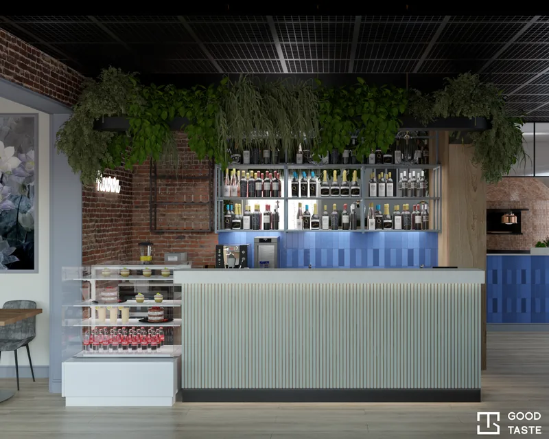

Restauracja Nowwa Wrocław O projekcie Restauracja Nowwa WrocławProjekty technologiczne gastronomii — Wrocław i Dolny Śląsk
Lokal gastronomiczny to zarówno przestrzeń dla gości, jak i miejsce codziennej pracy zespołu. W Good Taste tworzymy projekty technologiczne gastronomii oraz koncepcje wnętrz lokali.
Zobacz projekty lokaliProjekt lokalu zaczyna się od jego funkcji
Restauracja z obsługą stolików i punkt z zamówieniami przy ladzie mają różne potrzeby. Przy planowaniu warto powiązać menu, sposób przygotowywania potraw i obsługę gości z dostępną powierzchnią. Rozmieszczenie stanowisk, wyposażenia i przejść wpływa na codzienne korzystanie z lokalu.
Technologia gastronomii a projekt wnętrza
Projekt technologiczny skupia się na organizacji pracy i funkcjach lokalu. Projekt wnętrza dotyczy także jego charakteru: materiałów, kolorów, oświetlenia i przestrzeni dla gości. Te obszary warto omawiać razem, ale ich zakres nie jest tożsamy.
W galerii pokazujemy wizualizacje restauracji Nowwa we Wrocławiu oraz lokalu Dobry Kebab w Słubicach. Pozwalają zobaczyć koncepcje stref obsługi i sal dla gości. Zakres dokumentacji dla Twojego lokalu ustalimy osobno, na podstawie jego potrzeb.
Planujesz gastronomię na Dolnym Śląsku?
Zapraszamy do rozmowy o lokalach we Wrocławiu i w regionie. Na początek opisz rodzaj gastronomii, miejscowość oraz etap inwestycji — czy wybierasz lokal, adaptujesz istniejący, czy planujesz zmiany w działającej przestrzeni.
Co przesłać przed pierwszą rozmową?
- Rzut z wymiarami, zdjęcia lokalu i dostępne informacje o instalacjach.
- Planowane menu i sposób obsługi: przy stoliku, przy ladzie lub na wynos.
- Przewidywaną liczbę gości i listę posiadanego wyposażenia.
- Lokalizację, planowany budżet i termin otwarcia lub przebudowy.
Portfolio
Projekty lokali gastronomicznych
Przed rozpoczęciem projektu
Od czego zależy cena projektu technologicznego?
Znaczenie mają wielkość i stan lokalu, rodzaj gastronomii, planowane wyposażenie oraz zakres dokumentacji. Rzut i krótki opis działalności pomogą rozpocząć rozmowę o wycenie.
Czy wizualizacja pokazuje pełny projekt technologiczny?
Nie. Wizualizacja przedstawia wygląd przestrzeni. Ustalenia dotyczące organizacji zaplecza, urządzeń czy instalacji wymagają odrębnego opracowania. Galeria prezentuje wizualną część projektów.
Czy warto rozmawiać o projekcie przed wynajęciem lokalu?
Tak. Warto wcześniej omówić, jak planowana działalność ma się do układu i wyposażenia przestrzeni. Przygotuj rzut oraz dostępne informacje techniczne, aby rozmowa dotyczyła konkretnego lokalu.
Szukasz projektu dla swojej prywatnej przestrzeni? Zobacz projektowanie wnętrz mieszkań.
Wrocław i Dolny Śląsk
Kontakt
Porozmawiajmy o Twoim projekcie. Podaj miejscowość, metraż i planowany termin.
Napisz do nasAdres e-mail wkrótce
ZadzwońNumer telefonu wkrótce
Obserwuj nasFacebook — wkrótce